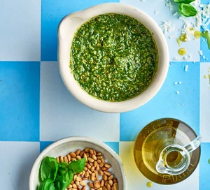

Back To Home
Basil Pesto

Favourite pesto recipe courtesy of BBC Good Food
Ingredients:
- 50g pine nuts or cashews
- large bunch of basil, leaves picked
- 50g parmesan or vegetarian alternative
- 1 garlic clove, chopped
- 100ml olive oil
Steps:
- Toast the nuts in a pan over a low heat. Tip into a mini chopper with the remaining ingredients, or use a large pestle and mortar,
then blitz or pound into a rough sauce. Will keep for three days in the fridge.